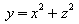

This is a simple document that I authored using Open Office's HTML editor. It seems pretty cool so far. Actually it seems pretty much like the Writer application (no surprise).
This is another paragraph.

I just inserted a formula above. How does it look?